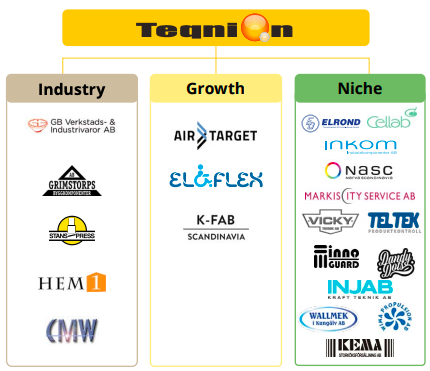
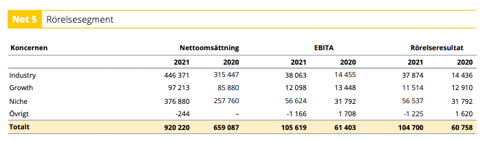
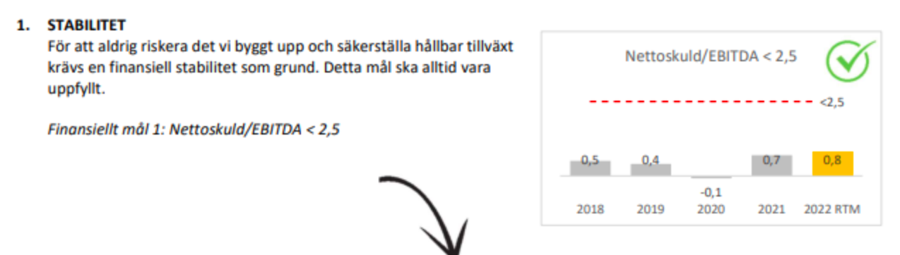
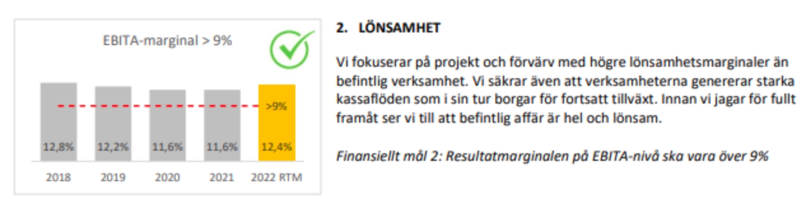
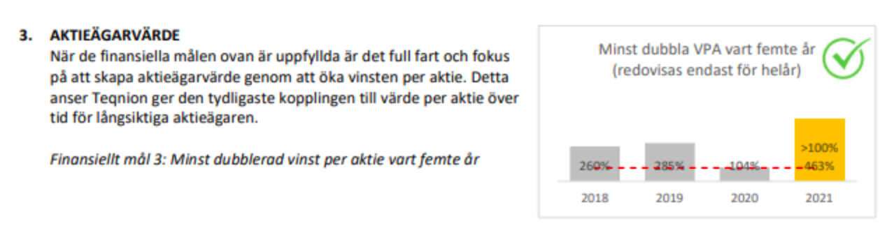
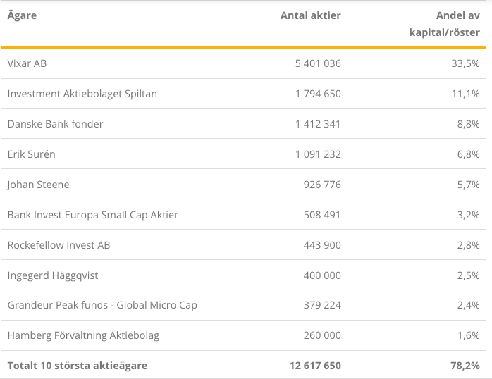
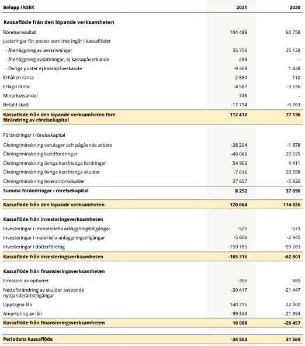
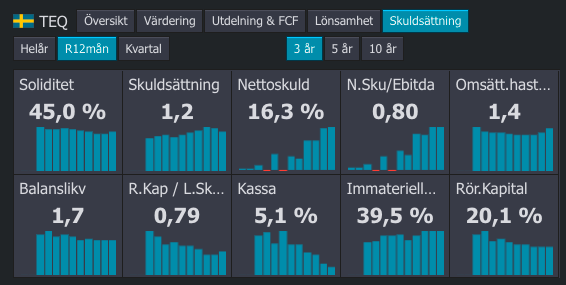
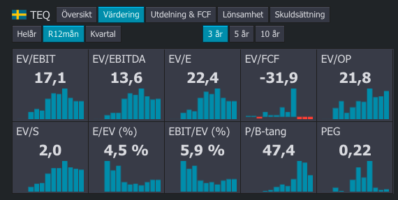
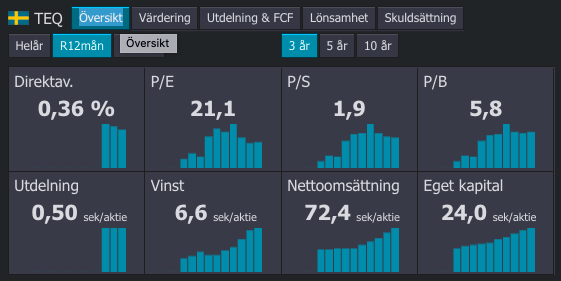

Aktiecase - Teqnion
aktieanalys
bolagsanalys
aktiecase
Teqnion
Teqnion har troligen en av de bästa möjliga uppsättningen av vd och finanschef jag sett
Disclaimer: Tänk på att investeringar alltid innebär ett risktagande. Gör alltid din egen analys innan eventuell handel. Jag tar inget ansvar för vad ni väljer att göra med denna information.
Sammanfattning
Teqnion är en välskött industrikoncern med färgstarka ledare med Johan Steene bakom ratten samt Daniel Zhang som finanschef. Bolaget förvärvar industri-, nisch- och tillväxtbolag med ca 50 miljoner i omsättning. Värderingen är ganska hög med ett P/E på 21.3, detta är högre än vad jag normalt är villig att betala, däremot anser jag att det kan vara värt att betala extra för då organiska tillväxten var 20 procent under Q2 tillsammans med starkt ägande och utmärkt ledning.
I ett scenario som jag anser rimligt tror jag bolaget gör ett par förvärv till under 2022 och adderar 200 mkr vilket ger ett fair value på runt \(\frac{EV}{E}\) på 23x, då är hela bolaget värt 2959 miljoner vilket ger ett fair value per aktie på 183 SEK.
Karta över dotterbolagen
Klicka på nålarna för att se redovisat värde enligt årsredovisningen år 2021. Kartan saknar två bolag, ett i UK (Belle Coachworks Limited) samt Teltek i Örebro.
Bakgrund
Teqnion är en industrikoncern som sedan 2006 haft affärsidén att förvärva och äga industri-, nisch- och tillväxtbolag. Inspirationen kommer bland annat från Berkshire Hathaway som idag är ett av världens största bolag. Bolaget präglas av en skön stil genom sin kommunikation med marknaden, där det ska vara enkelt och förståeligt, precis som de själv önskar att sina förvärv ska vara; Lönsamma, enkla att förstå samt drivas av entreprenörer.
Personligen kom jag i kontakt med bolaget genom bolagets CFO, Daniel Zhang som har skrivit en bok om investeringar. Han har medverkat i ett poddavsnitt med Market Makers där han bryter ner vissa delar av bokens innehåll.
Jag själv gillar boken väldigt mycket och tycker Daniel har en mycket god känsla för vad som är ett bra förvärv och vad som inte är det.
Teqnion grundades 2006 och har sedan dess växt fram till att ha verksamhet i tre olika affärsområden: Industri, Tillväxt och Nischade produkter.
Vi är fast övertygade om att en viss hälsosam paranoia är en viktig grundbult för ett långsiktigt företagande
Affärsidé
Teqnions affärsidé är att bygga en diversifierad företagsgrupp genom att förvärva kvalitetsbolag med gynnsamma framtidsutsikter. De förvärvade bolagen fortsätter att agera och drivas självständigt samtidigt som de vidareutvecklas genom fortsatt fokus på entreprenörskap i kombination med Teqnions kunskap, kontaktnät och finansiella resurser. Detta gör att moderbolaget kan vara litet vilket leder till snabba beslut och starka och handlingskraftiga dotterbolag.
Detta är mycket likt det som Berkshire gjort över tid, förvärva bolag som antas kunna fortsätta leverera och hjälpa entreprenören med finansiering och expansion. Volati är ett annat bolag som har gjort en likande resa, fast med då ett större fokus på industri-industri bolag.
Värdeskapade processen
- Entreprenörerna får realisera sitt värdeskapande, Teqnion får äga fina bolag. En typisk win/win som har fungerat över lång tid.
- Företagen får möjlighet att rida på Teqnions axlar med starkare tillgång till kapital och nätverk.
Verksamhetsområden
Teqnion har verksamhet genom totalt 21 dotterbolag sin i sin tur finns i tre verksamhetsområden: Industri, Nisch och Growth.

De flesta bolagen omsätter ca 50 miljoner SEK per år, det verkar vara en omsättningsstorlek som bolaget satsar på. Utan att ha läst in mig i detalj på varje bolag är alla förutom ett baserade i Sverige med större vikt kring Stockholm.
Industribolagen omsätter generellt mer, samtidigt som Nischbolagen har högre marginaler då dessa har mindre konkurrens.

Industri, nisch och tillväxt växer med 46, 41 och 13 procent respektive under 2021. Det finns ingen redovisning på bolagsnivå, givetvis går detta att gräva i ändå, men jag har valt att inte göra det än.
Finansiella mål
Teqnions har tre finansiella mål: stabilitet, lönsamhet och aktieägarvärde. Alla mål är uppnådda med marginal
Stabilitet - Nettoskuld/EBITDA < 2.5

Nettoskulden ska inte vara för hög. Jag anser det konservativt att hålla sig under 2.5x.
Lönsamhet - Minst 9 procent EBITA

Lönsamheten ska vara över 9 procent över på EBITA-nivå. Om detta lyckas är det helt fantastiskt.
Aktieägarvärde - Dubbla aktievärde över en femårsperiod.

Jag anser det intressant att bolaget har ett bra mål med att växa vinst per aktie med i snitt 15 procent per år. Det uppmuntrar till att hålla förvärven på en bra nivå och att det inte är förvärv som förstör värde. Denna tillsammans med stabilitetsmålet skapar en säkerhet att belåningen inte hamnar ur balans.
Ägare

Styrelseordförande äger mest. Spiltan är generellt långa aktieägare. Johan Steene är vd och äger 5,7 procent. Övergripande starkt ägande från ledning och styrelse.
Ledning (TQ stab)
Jag har inte tidigare sett en så stark uppsättning av vd och finanschef som jag känner att jag litar på dessa personer. Johan har uppvisat genom sitt otroliga engagemang i ultramarathon att han inte bara är en bra löpare utan främst att han inte ger upp. Han har tagit världsrekord år 2018 efter att ha presterat sjukt bra i en backyard ultra marathon.
Finanschefen Daniel Zhang har en otrolig näsa för förvärv och jag har läst hans bok två gånger för att inspireras av den visom som den innehåller. Fantastiskt att se att det går att rida på Daniels rygg när det kommer till att köpa bolag.
Större delen av information som kommer är från Teqnions egna sida för ledningsgruppen.
Johan Steene

Johan är en helt otrolig löpare och har en egen wikipedia sida. Jag har inte sett någon tidigare som har visat en sådan bestämdhet att nå ett specifikt mål som Johan när han springer ultra.
VD och Styrelseledamot sedan 2012. Verkställande direktör sedan 2009. Född 1973. Utbildning: Civ. Ing. i Maskinteknik, Kungliga Tekniska Högskolan. Bakgrund: Medgrundande av Teqnion. Aktieinnehav i Teqnion: 926 776. Optionsinnehav i Teqnion: 19 500.
Daniel Zhang

Roller: CFO, CXO och IR. CXO sedan 2021. CFO och IR sedan 2022. Född 1989. Utbildning: Examen i företagsekonomi, Handelshögskolan i Stockholm.
Bakgrund: Managementkonsult på McKinsey & Co samt Bain & Co. Senaste rollen var som strategi- och affärsutvecklingschef på Textilia. Stort intresse för investeringar och gav under 2021 ut boken “An Investment Thinking Toolbox”. Aktieinnehav i Teqnion: 35 000. Optionsinnehav i Teqnion: 0.
Daniel har under senaste tiden enligt finansinspektionens insynsregister köpt aktier i Teqnion.
Styrelse
Per Berggren som är styrelseordförande har med sin största aktiepost en stor inflytande post över bolaget. Jag har inte gjort så mycket research på honom än. Större delen av informationen som kommer är från Teqnions egna sida för styrelsen.
Per Berggren

Styrelseordförande sedan 2022, Styrelseledamot 2020-2022, styrelseordförande 2009-2020. Född 1968. Utbildning: Civilekonomexamen, Stockholms Universitet.
Bakgrund: Entreprenör och bolagsbyggare. VD och delägare av valutaväxlingsföretaget X-change 1998-2007 innan bolaget köptes upp av Forex Bank. Medgrundare till Vixar AB som utöver sitt innehav i Teqnion investerar bl a i bolag inom grön energi, IT samt vård och omsorg. Andra pågående uppdrag: Styrelseledamot i Pricka AB. Styrelseledamot i Cedergruppen AB och Loek Fastigheter AB. Styrelseledamot och verkställande direktör i Vixar AB.
Aktieinnehav i Teqnion: 5 401 036 genom Vixar AB där han äger 50% av aktierna.
Erik Surén

Styrelseledamot sedan 2006. Född 1971. Utbildning: Gymnasieexamen samt utbildningar inom försäljning och marknadsföring.
Bakgrund: Medgrundare till Teqnion. VD för Industrikomponenter AB 2005-2021, som var ett av de första Teqnionbolagen. Dessförinnan seniora befattningar inom försäljning på SanDisk Corporation 2000-2005, VD Electrona Sievert AB 2008-2009 samt flertalet styrelseuppdrag inom Teqniongruppen. Andra pågående uppdrag: Diverse styrelseuppdrag i Teqnions dotterbolag. Aktieinnehav i Teqnion: 1 091 232.
Aktien
Bolaget finns noterat på First North. Totalt finns det 16,1 miljoner aktier. Runt 46 procent av aktierna ägs av insiders (Per, Johan och Erik).
Förvärvsstrategi
Kärnan i Teqnions verksamhet handlar om att förvärva bolag. detta går att göra på många sätt och speciellt när det kommer till finansieringen. Teqnion har valt att använda sig av resultaten från sina dotterbolag för att köpa bolag med samt att använda sig av banklån till ungefär en 50/50 split.
Detta anser jag är mycket bättre än att försöka jaga förvärv med dyrare kapital så som att skaffa företagsobligationer eller att göra nyemissioner vid förvärv.
Jag som aktieägare kommer då inte att bli utspädd och det är rimligt också från ett perspektiv av ägarna som inte vill tappa kontroll över sitt bolag. Över lång sikt kommer detta att bli susen givet att det bara tuffar på.

Denna strategi bekräftas även i den kassaflödesanalys jag har gjort över bolaget. Jag tolkar det som att det är 120 miljoner som kommer in i cashflow från dotterbolag osv, sedan går 165 miljoner till förvärv och ca 10 miljoner kommer från banklån. Detta är förstås förenklat som tusan, men ungefär så.
Case
Jag tycker att Teqnion är lite dyrt just nu. Med en \(\frac{EV}{EBIT}\) på 17,1 är det rätt mkt. Däremot är jag kär i ledningen, Johan är helt otrolig. Daniel är också helt fantastisk och duktig.

Nettoskulden genom EBITDA är visserligen bara 0,8 vilket är mycket lägre än vad som kan tillåtas. Tillväxten kan alltså mala på ett tag till med förvärv innan det är någon allvarlig skuldsättning som kan sätta bolaget i kris. Generellt så tycker jag skuldsidan ser bra ut.

Värderingen är som sagt lite hög, men det är ju kvalité också.

På överblicken ser allt generellt bra ut, men multipel är en smula hög fortfarande. Det som talar för caset är att exponeringen ser ut att suga åt sig mycket tillväxt när priserna går upp.
Värdering utan förvärv
Vad är Teqnion värt? Med den tillväxt som bolaget visar organiskt på hela 20 procent visar det att bolaget är starkt. Säg att bolaget inte förvärvar något mer i år, då bör Teqnions omsättning vara runt 1200 miljoner, vilket med dagens vinstmarginal på 9.2 procent innebär ca 110 miljoner i vinst för 2022.
Med tanke på att Teqnion har god balansräkning, paranoid ledning och starka ägare så bäddar det för god tillväxt framåt. Jag anser att med den organiska tillväxten på runt 20 procent är bolaget värt runt 25x vinsten, vilket för helåret 2022 är \(110*25=2750\) i börsvärde för helåret 2022.
Det är att jämföra med dagens börsvärde på 2145 miljoner. Det ger en uppsida på 28 procent vilket är helt okej. Jag anser att det är ganska fair value för bolaget.
Väldigt godtycklig analys!
Risker med denna analys
Riskabelt med analysen är främst att marginalerna svänger mycket från år till år. Att köpa just nu är att köpa på toppmarginaler, marginalerna har aldrig varit så höga som dom är just nu. Är det rimligt att tro att marginalerna ska ner? Över lite längre sikt så tror jag det.
Värdering scenario med förvärv
Säg att Teqnion förvärvar två bolag till, som blir uppköpta för 1x sales och omsätter 200 miljoner och har samma 9,2 procent i marginal. Skuldsättningen ökar med 200 miljoner. \(\frac{EV}{E}\) blir då 19.32 vilket är lägre än 21.1 som vi använde tidigare. Vinsten för helåret 2022 är då 129 miljoner och det är anser jag är värt runt 23x –> börsvärde på 2959 miljoner. Värderar det lägre då skuldsättningen ökar.
Detta ger en uppsida på 38 procent, från dagens börsvärde på 2145 miljoner.
Scenario - Tappar marginaler
Låt säga att marginalerna i Teqnion minskar till 6.9, vilket har varit snittet för bolaget mellan 2015-2021. Vinsten går då från 129 miljoner till 96 miljoner. Med samma multipel som tidigare är då bolaget värt 2208 miljoner, vilket fortfarande är lite mer än 2145 miljoner som är dagens börsvärde.
Scenario - Lågkonjunktur test
Marginalerna är nu 4 procent och omsättningen har minskat med 20 procent. Från det tidigare scenariot när vi tänkte att tillväxten ökade till 51 procent så är den nu 41 procent med en vinstmarginal på 4 procent. Nettoskuld på 344 miljoner och 52 miljoner i vinst ger en \(\frac{EV}{E}\) på 48.
Med samma multipel som tidigare är bolaget då värderat till 1196 miljoner, vilket är 44 procent ner från dagens värdering. En aktie är då värd 74 SEK.
Sammanfattning
Teqnion är en välskött industrikoncern med färgstarka ledare med Johan Steene bakom ratten samt Daniel Zhang som finanschef. Bolaget förvärvar industri-, nisch- och tillväxtbolag med ca 50 miljoner i omsättning. Värderingen är ganska hög med ett P/E på 21.3, detta är högre än vad jag normalt är villig att betala, däremot anser jag att det kan vara värt att betala extra för då organiska tillväxten var 20 procent under Q2 tillsammans med starkt ägande och utmärkt ledning.
I ett scenario som jag anser rimligt tror jag bolaget gör ett par förvärv till under 2022 och adderar 200 mkr vilket ger ett fair value på runt \(\frac{EV}{E}\) på 23x, då är hela bolaget värt 2959 miljoner vilket ger ett fair value per aktie på 183 SEK.
Läs gärna mina tidigare inlägg: Raketech och Devport.